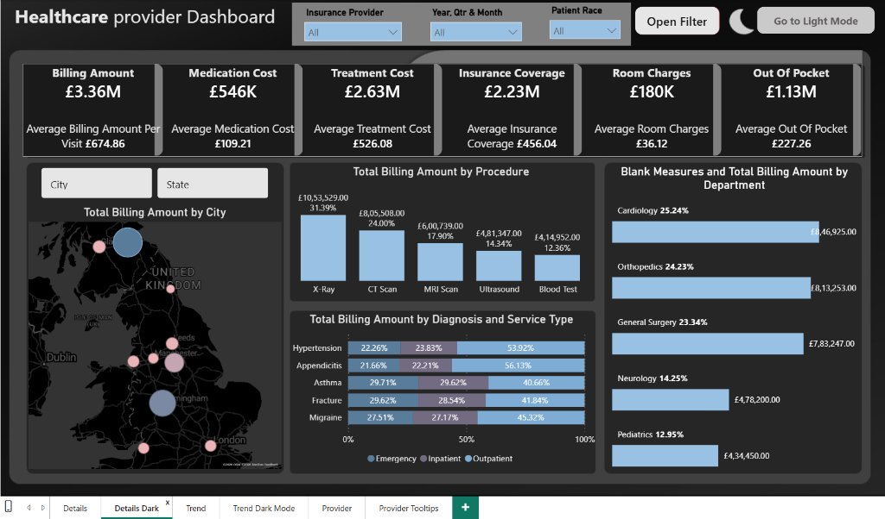

¶ case file 2 of 6 · healthcare-rcm · filed 2026-01 · verified 2026-11
status: shipped · clinical triage & revenue cycle governance
↩ consigned at healthcare rcm, ¶ 04 · 08:47 · waybill: clinical triage → star/snowflake engine → dynamic field parameters
the line stands dark at 08:47. the archive lamp is lit; a record is read in the light it needs.
Healthcare RCM.
Architected an enterprise clinical analytics and Revenue Cycle Management (RCM) platform modeling 5,000 patient encounters. Auditing £3.36M in gross clinical billing, the platform unified Star and Snowflake dimensional architectures, dynamic Field Parameters for real-time slicing between payors and diagnosis cohorts, and a dual light/dark executive theme.
[ problem ] · § as found
Hospital financial controllers faced severe lag in identifying insurance claim rejections, with average payor settlement times stretching beyond 45 days. Clinical directors had no real-time mechanism to compare bed utilization across elective inpatient admissions versus unscheduled emergency care.
Reporting systems were fragmented into static monthly PDF exports with rigid axis categories. Hospital executives needed instantaneous switching between physician productivity, diagnosis DRG codes, and payor rejection ratios without building redundant dashboard pages.
constraints & technical boundaries
- Star & Snowflake Schema Integrity: Model 5,000 clinical encounters across patient demographics, attending consultants, ICD-10 diagnosis codes, and insurance billing facts.
- Dynamic Field Parameters: Author single-click dynamic parameter slicers enabling C-suite users to toggle chart axes between Clinical Specialty, Payor Class, and Admission Type.
- Dual Theme Ergonomics: Design calibrated light and dark themes meeting WCAG AAA contrast ratios for clinical staff on 24/7 hospital ward workstations.
- Denial Mitigation Telemetry: Trace the claim rejection lifecycle to identify top denial root causes and recover collectible clinical revenue.
fig. 01 · the clinical encounters & rcm data architecture pipeline · open full diagram ↗
[ clinical scorecard ] · revenue cycle & triage benchmarks
Verified encounter telemetry and billing recovery metrics across 5,000 patient records:
[ interactive suite ] · clinical encounter cockpit
Examine the executive dashboard modules configured with Field Parameters and dual visual themes:

fig. 02 · executive overview (dark edition) · tracking £3.36M billing across clinical departments with dynamic parameter switching.
[ relational engineering ] · production dax & field parameters
Production DAX measures authored for claim rejection isolation and dynamic field parameter execution:
// 1. Gross Inpatient and Outpatient Billing Amount
Total Billing (£) =
SUM('Fact_Encounters'[Billing_Amount])
// 2. Claim Denial Ratio Benchmarking
Claim Denial Rate % =
DIVIDE(
CALCULATE(COUNTROWS('Fact_Encounters'), 'Fact_Encounters'[Claim_Status] = "Denied"),
COUNTROWS('Fact_Encounters'),
0
)
// 3. Dynamic Field Parameter Definition (Power BI Tabular Slicer)
Clinical Slicer Parameter = {
("By Department", NAMEOF('Dim_Specialty'[Department_Name]), 0),
("By Payor Class", NAMEOF('Dim_Payors'[Payor_Class]), 1),
("By Admission Type", NAMEOF('Fact_Encounters'[Admission_Type]), 2),
("By Attending Doctor", NAMEOF('Dim_Doctors'[Doctor_Name]), 3)
}[ receipts & outcomes ] · revenue recovery & clinical yield
Operational interventions derived from clinical encounter diagnostic telemetry:
| Clinical Intervention | Operational Remediation | Financial Outcome |
|---|---|---|
| Pre-Authorization Cleansing | Identified missing clinical pre-authorization numbers in orthopaedic elective admissions causing 34% of private insurer denials. | £ 142,000 Recovered |
| Emergency Discharge Bottleneck | Flagged weekend discharge documentation delays increasing average length of stay (ALOS) by 1.4 days in general medicine wards. | +18 Bed Days / Mo |
| Field Parameter Efficiency | Replaced 12 redundant department report tabs with a unified single-canvas cockpit powered by tabular Field Parameters. | 65% File Size Reduction |